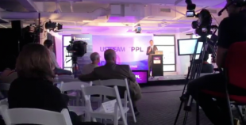
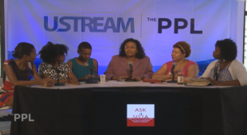
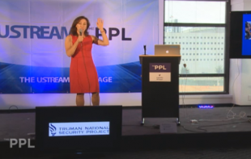
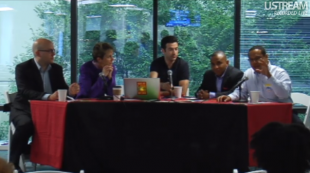
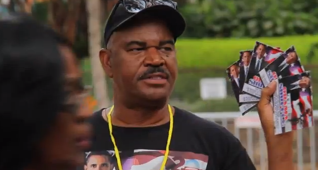
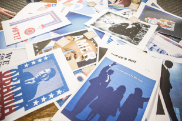
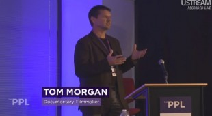
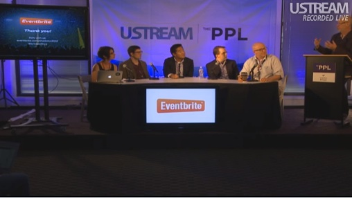
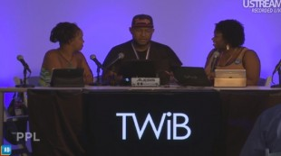
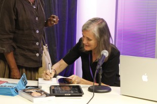

#DNC2012
Schedule
Attendees
About
Partners & Sponsors
Press
Contact
Ustream LIVE Stage
Health Care Reform and Physician Advocacy w/ Dr. Vivek Murthy and Alice T. Chen
From the PPL

#DNC2012: Video recap of day three
Ustream LIVE Stage

Ask a Sista @ The PPL: Day 2
Ustream LIVE Stage
LGBTQ: Conversation & Action On Equality
Ustream LIVE Stage

Innovation in Foreign Policy
Ustream LIVE Stage
Female Founders, presented by Startup America & Startup RockOn
Ustream LIVE Stage

Envisioning prosperity, presented by SEIU
From the PPL

#DNC2012: Video recap of day two
From the Newsroom
From the Newsroom: Baratunde Thurston
From the Newsroom
From the Newsroom: Y-Press
From the People
From the PPL: ‘Howard Dean: The Case for Obama’
From the Newsroom
From the Newsroom: Ustream & Tomoko Hosaka
From the PPL
Undocubus riders at the DNC
From the Newsroom
From the Newsroom: Tumblr, ILoveCharts & Jason Oberholtzer
Ustream LIVE Stage
Comedian Tone-X performs at the PPL
From the PPL
#DNC2012: Video recap of day one
Ustream LIVE Stage

Design for Obama
Ustream LIVE Stage
RESURRECTION: A Sustainable Fashion Forum
Ustream LIVE Stage

These Storied Streets
Ustream LIVE Stage
Campaigning on a Progressive Economic
Ustream LIVE Stage
Innovation in digital media
Ustream LIVE Stage
Junk in the Environmental Trunk
Ustream LIVE Stage

Innovations in the Technology of Politics
Ustream LIVE Stage
Innovations in Gaming
Ustream LIVE Stage
Twelve in Twelve: One Family, One Mission, Seven Continents
Ustream LIVE Stage
Ask a Sista @ The PPL: Day 1
Ustream LIVE Stage
The Future of Energy
Ustream LIVE Stage
Suppression, Protection, and Integrity
Ustream LIVE Stage
The First Amendment and the separation of church and state
Ustream LIVE Stage
Innovation in Journalism, presented by Hypervocal and Startup RockOn
Ustream LIVE Stage
How Government Can Foster Startups, presented by Startup America/Startup RockOn
Ustream LIVE Stage

TWiB This Week in Blackness
Ustream LIVE Stage
Can a city built for cars change lanes?
Ustream LIVE Stage
‘Young people are crucial’: Youth Civic Engagement
Ustream LIVE Stage

The PPL begins with Democracy Now
Welcome to The PPL!